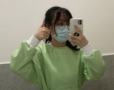
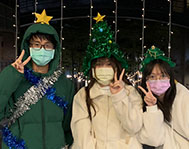
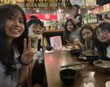

Daily Life
日常生活

暑假打工之快樂牙助

在團契過的快樂聖誕節

品伃的異想世界
在去年暑假，我應徵上了全職牙助，想多學習多嘗試新的事物，而在我當牙助時，也開始養成了健身的好習慣，因此我擁有了一個超級充實的暑假生活。
我還擁有一群好室友兼好麻吉，我們常常一起做很多事情也參加許多活動，去年一起參加團契的聖誕趴感受他們聖誕節的快樂氛圍，還有還有暑假時他們還幫我過了一個令我難忘的生日，過沒多久也幫另外一位室友慶祝生日，非常開心!
去年暑假，在因緣際會下當了兩個月的正職牙助，我迅速地熟悉診所的事務，包括看診前的準備、清潔、跟診的流程和器械消毒，甚至我是我們診所最會拍X光的人呢！雖然還有一些東西沒有接觸到例如矯正和植牙等，但我對於學習新事物充滿熱忱和衝勁。同時，我也會繼續不斷地學習和提升自己，以做得更好。
我不僅學習了許多實用的技能，而且也學會了如何與病人和同事相處。我學會了如何解釋病人的診斷和治療計劃，並且能夠幫助他們理解和適應。我也學會了如何與同事合作，並且能夠在必要的時候提供幫助。總之，我在這段經歷中學到了很多寶貴的知識和技能呢，未來也不排除繼續挑戰其他新領域的可能性！